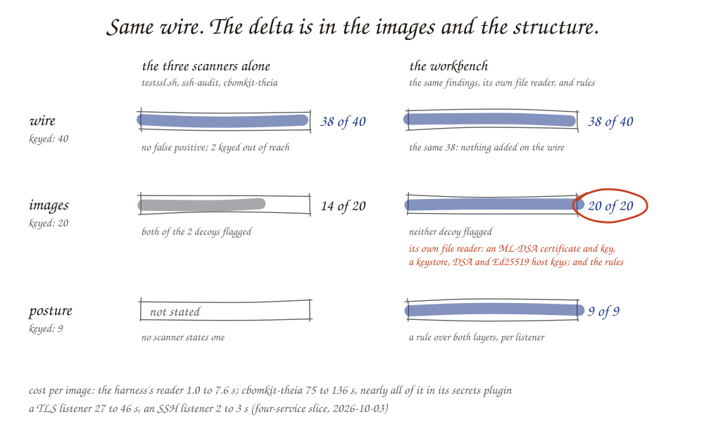

What do the open-source scanners cover, and what is built on top?¶
The answer¶
Run together, three open-source tools produce most of a first cryptographic inventory for network listeners and container images: testssl.sh for TLS, ssh-audit for SSH, and cbomkit-theia for certificates and keys inside images. On the four-service slice they find 22 of 23 items on the wire and 7 of 10 in images; on the eight-service estate, 38 of 40 and 14 of 20, the two wire misses being keyed out of reach. A harness built on top of them finds the same wire items. What it adds is in the images and in the structure: its own reader of key material finds what theia cannot read — an ML-DSA certificate and its key, a PKCS#12 keystore, DSA and Ed25519 host keys — and its rules say which wire finding and which file are the same key, which certificate in an image is not served by anything (while leaving a certificate authority's alone), and what each listener's posture is. On the estate that is 20 of 20 image items against 14, two decoys avoided against two flagged, and nine postures stated against none.
The concept: three layers, three kinds of tool¶
A cryptography bill of materials (CBOM) is an inventory of cryptographic assets: algorithms, keys, certificates, protocols, each with where it was found. Evidence for it comes from three layers:
| Layer | What is observed | Tool here |
|---|---|---|
| Wire | What a listener negotiates when a client connects | testssl.sh (TLS), ssh-audit (SSH) |
| Host | Files in an image or on a disk: certificates, keys, configuration | cbomkit-theia |
| Code | Calls to cryptographic libraries in source | CBOMkit's source scanners (Java, Python, Go) — not yet run in this project |
No single tool spans the layers. CBOMkit, the open-source CBOM toolset, does not scan networks, so against a wire-only estate it scores zero by construction. That makes "better than CBOMkit" an empty comparison for anything that includes a network scanner. The comparison that means something is against all the scanners run together with no harness.
The mechanism: how the comparison is made fair¶
An answer key lists what a perfect inventory holds. Each item has a class: present (planted, findable), decoy (looks like a finding, is not), out-of-reach (real, but no scan can see it) or supplied (can only be typed in). Out-of-reach items stay in the denominator and are reported as known misses. A reported decoy is a false positive. So is a claim, on a keyed listener, of a key-establishment or signature algorithm the key does not hold.
Three inventories are scored from one scan:
- CBOMkit alone — cbomkit-theia's findings only.
- Scanners alone — every tool's findings, unioned, with names normalized and duplicates folded, and nothing else.
- Workbench — the same findings plus the output of three rules.
Both baselines pass through the same normalizer as the workbench, so they are scored on what the tools said in one vocabulary. That is generous to the baselines: name normalization and de-duplication are credited to them.
Worked example¶
The estate: two TLS listeners (one classical, one offering a hybrid group) and two SSH listeners (OpenSSH 6.6 and OpenSSH 10.0), with their four images. Measured 2026-10-03 on an x86_64 lab server.
| Layer | CBOMkit alone | Scanners alone | Workbench |
|---|---|---|---|
| Wire, of 23 | 0 | 22 | 22 |
| Host, of 10 | 7 | 7 | 7 |
| Host decoy flagged | yes | yes | no |
| Listener posture, of 4 | not stated | not stated | 4 |
What the scanners got right. Both wire tools report post-quantum hybrids
by name: testssl.sh lists X25519MLKEM768 under its KEM line, and ssh-audit
lists mlkem768x25519-sha256 and sntrup761x25519-sha512. Every classical
key-exchange group and every host-key type on all four listeners was found.
What they missed, and why.
| Miss | Layer | Reason |
|---|---|---|
| What the legacy SFTP server offers when it connects out | Wire | No listener shows it; only traffic capture beside the client would. Keyed as out-of-reach |
| DSA host key file | Host | cbomkit-theia reports it as "private-key" with no algorithm. The workbench does not guess one |
| Two Ed25519 host key files | Host | cbomkit-theia 1.1.2 reported neither; both are in OpenSSH's own key format |
The decoy. One image holds a second certificate, RSA-1024 with SHA-1, that no listener serves. cbomkit-theia reports it identically to the served certificate, as it should: it reads files. The workbench compares the public key of each certificate served on the wire with each certificate found in the image, links the ones that match, and marks the unmatched one, and everything read from that file, as not in use. It makes that judgement only when every listener of that image was scanned and each served certificate was found in the image; otherwise it says nothing.
What the rules add.
| Rule | Adds |
|---|---|
| Link by public key | "The certificate at 172.16.106.10:443 is the file /etc/nginx/tls/portal.crt in this image" — the first link of a dependency chain, with the hash as evidence |
| In use or not | Separates what an image contains from what a service uses |
| Posture | Per listener: classical, mixed (post-quantum key exchange, classical authentication) or post-quantum |
Cost. A targeted TLS scan takes 27 to 46 s per listener; SSH takes 2 to 3 s. An image scan takes 71 to 96 s for images of a few megabytes, nearly all of it in cbomkit-theia's secrets plugin, which reads a file once for every symlink that points to it — Alpine's BusyBox has 304 (lesson 09). Image contents change only when an image does, so those results are replayed from the ledger with their original timestamps, and a routine re-scan takes as long as its slowest TLS listener.
The baseline is the tool's own document. Scored with no normalizer at all, cbomkit-theia's own CBOM files give the same 7 of 10 and the same flagged decoy as the projected baseline — once a reader follows theia's own reference from a certificate to its key. Read by component name alone they give 5 of 10, because theia names a certificate by its subject, not its algorithm.
Beyond the slice: what each scanner can see¶
A second set of targets was built to ask the questions the slice does not: a TLS 1.3 server with an ML-DSA-65 certificate, Postgres 18 over its in-protocol TLS upgrade, RabbitMQ 4 and Kafka 4.1 over TLS, a listener that demands a client certificate, a client watched passively by Zeek, and one Ruby call site. Each tool ran on x86_64 and again as arm64 under emulation.
| Capability | testssl.sh | OpenSSL sweep | ssh-audit | cbomkit-theia | Zeek | Opengrep |
|---|---|---|---|---|---|---|
| Hybrid told from classical, TLS | yes | yes | — | — | yes (x86_64) | — |
| Hybrid told from classical, SSH | — | — | yes | — | — | — |
| ML-DSA-65 certificate | yes, on the wire | yes, on the wire | — | no: drops the file | — | — |
| Postgres over its TLS upgrade | yes | yes | — | — | — | — |
| RabbitMQ, Kafka over TLS | yes | yes | — | — | — | — |
| Client-certificate listener | yes | yes | — | — | — | — |
| A client's offered groups | — | — | — | — | yes (x86_64) | — |
| A Ruby call site | — | — | — | — | — | yes, one rule |
The open-source wire tools are further along than expected: testssl.sh reads an ML-DSA certificate even though its own bundled OpenSSL predates ML-DSA. The weak point is the file layer. Neither broker offered any post-quantum group, so on those images a hybrid requirement cannot be configured at all — a migration fact, not a scanner gap.
Two limits of this table. A list of accepted groups is not the whole of key
establishment: in TLS 1.2 a server may also accept RSA key transport, where
the client encrypts the session secret to the server's RSA key and no group
is involved. The Postgres target, configured with the hybrid group and
X25519, still accepts it. A scan that reports groups reports that server as
"hybrid and X25519"; anyone recording its traffic needs only the server's RSA
key, later. An inventory of key establishment on a TLS 1.2 listener needs the
cipher suites as well as the groups. The harness's TLS scan therefore asks
testssl.sh for every cipher suite as well (-E), which costs 9 to 17 s more
per listener on the slice, and reports each TLS_RSA_WITH_* suite as key
establishment by RSA. On the slice's portal — an RSA certificate, TLS 1.2
allowed, only ECDHE suites configured — it correctly reports none; that
listener is the answer key's wire decoy for exactly this inference. And a "yes" in the table means the two
wire tools agree with each other and with what the target was configured to
offer; for the two brokers, whose group lists are their runtimes' defaults,
it means the tools agree. A server's own account is not a third witness:
RabbitMQ lists three Brainpool TLS 1.3 groups it then refuses on the wire.
Three times testssl.sh looked wrong and the reference was wrong instead (lesson 10): a comparison of scanners is only as good as its reference probe.
The SBOM beside the CBOM¶
An image's software bill of materials answers a question the three crypto layers do not: which
library provides the cryptography a listener does. Syft (1.33.0, pinned by digest) runs in the
runner over the same saved image as the other host readers, with no network, and its CycloneDX
output is kept on the ledger as an sbom.observed fact: the package count and the libraries that
provide cryptography (OpenSSL, libssl, GnuTLS, NSS, the JDK's providers and their kind), by name,
version, package URL and licence. No finding comes from it. A library present is a capability, not
an asset in use; the rule link/library/1 links each asset a service's listener negotiates or
serves to the library its image carries, preferring the one the capability snapshot names for that
service's software and otherwise linking every candidate and saying so, and the CBOM carries the
library as a library component with CycloneDX 1.6's provides relation and pqch:in-use true
only where something observed is provided. That is the answer to the owner who already runs SBOM
tooling and asks whether it can be extended rather than replaced: the SBOM is one more reader, its
output joined to the wire's by a rule, and what it cannot say (which library served the handshake,
when two are present) is marked rather than guessed.
Other open-source tools, tried and not adopted¶
Three more free tools were tried on the same terms — pinned image, run on the workbench's networks or offline, judged against what they should find:
| Tool | What it should find | What it did | Decision |
|---|---|---|---|
| sslyze 6.2.0 | the groups each TLS listener accepts | lists no post-quantum group; reports a hybrid-only listener as no TLS at all; reported secp256r1 rejected where a direct P-256 handshake completed | not adopted for key establishment; testssl.sh stays, and the second witness stays OpenSSL 3.5 probes |
| cdxgen 11.11.0, CBOM mode | crypto call sites in Java and Python | none, offline, in either pinned repository | not adopted: needs a build and the network |
| sonar-cryptography 1.6.1 (CBOMkit) in SonarQube | crypto call sites in Java, Python, Go | none: Python coverage is pyca/cryptography only, which the Python repository does not use; Java needs compiled classes | not adopted while third-party repositories are never built; the right tool for a team scanning its own built code |
The pattern is the one a reader should test for in any tool: silence is not a finding until the tool has been shown something it should report. All three were silent where the planted or labelled material says otherwise.
Any tool's CBOM, scored¶
Federal agencies inventory with commercial discovery tools. Rather than pick
among them, the workbench imports any tool's CycloneDX CBOM as evidence
(pqch import): each entry is placed on a scoped listener, a file in a named
image or a call site in a pinned repository, named the way the workbench names
its own, and scored against the answer key. Entries the importer cannot place —
the CycloneDX project's own CBOM examples have no locations — are kept in the
import's record by name and not counted. cbomkit-theia's own CBOMs, imported
this way, score exactly what its native reader scores.
What follows¶
- Start with the free scanners. For listeners and images they give most of an Enumerated-rung inventory with no harness at all.
- Expect noise at the host layer. This estate's images had their system trust stores removed so the key could be exact. The base images they are built from carry 148 (Ubuntu 14.04) and 121 (Alpine 3.22) certificate-authority certificates, and a file scanner reports every one. Telling "contains" from "uses" is the first real problem there.
- Check each scanner against a known target before trusting an absence. A tool that does not parse one key format reports nothing, which reads the same as "none present".
- State the delta honestly. At this rung a harness earns its place by structure and by what it enables next — tracing, prioritizing, verifying a change — not by finding more.
What the harness adds at M1: its own reader of files¶
cbomkit-theia stays the candidate generator and the baseline for the image
layer. Beside it the runner runs the harness's own reader (pqch
image-files) from its own image, with no network, over the same archive:
it walks the image's layers, honouring whiteouts, reads PEM and DER
certificates (ML-DSA included), private and public keys (OpenSSH included),
Diffie-Hellman parameters and PKCS#12 keystores — trying no password, the
empty one and the Java default, and recording which opened the store — and
writes on every certificate whether it is a certificate authority's
(basicConstraints CA with keyUsage keyCertSign,
lesson 28)
and on every file which configuration files name it. It is in neither
baseline, so the scanners-alone column is still exactly the tools. On the
eight images it took 1 to 8 s each where theia took 75 to 136 s, and it is
what closes the image layer from 14 of 20 to 20 of 20.

Scope¶
Covered: eight services and nine listeners (TLS 1.2 and 1.3, TLS behind PostgreSQL's upgrade, SSH), wire and image layers, pinned tool versions (testssl.sh 3.2.4, ssh-audit 3.9.0, cbomkit-theia 1.1.2) and the harness's own reader, on x86_64. The four-service numbers are from 2026-10-03.
Also covered, outside the slice and its answer key: Postgres, RabbitMQ and Kafka over TLS, a client-certificate listener, an ML-DSA-65 certificate, a client's offered groups, one Ruby rule — each tool on x86_64 and on arm64 under qemu-user emulation (spike S2).
Not covered: symmetric ciphers and MACs in a suite (the scan reads suites only for RSA key transport); CBOMkit's source scanners on real code (the key's five code-layer decoys are untested, the code layer is not scanned); Java keystores in JKS format (reported as unopened); UDP protocols; Zeek on arm64 (packet capture does not run under emulation); the M1 images under arm64. Arm64 results are from emulation, not a native arm64 host.
References¶
agency/answer-key.yaml— the items, classes and matching rules.eval/README.md— how the two baselines are constructed;eval/score_raw_theia.py.spikes/s2/README.md,results.md,results/matrix.md— the targets, the predictions written before the run, and every cell's evidence.docs/fable-review/M0-review.mdF-32 to F-36 — what was found wrong with the first scorer and key, and what was changed.- PQCA, CBOMkit architecture — what CBOMkit covers.
- OWASP CycloneDX, Authoritative Guide to CBOM — asset types.
- Related: what the CBOM workbench is; lesson 05, penalize what an inventory invents; lesson 08, identify a key by its public-key hash.